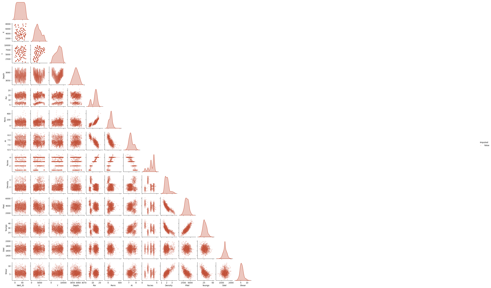
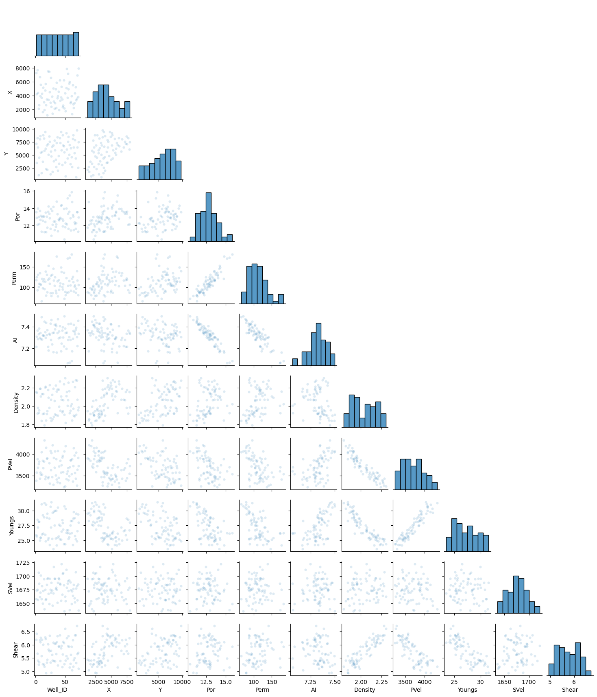
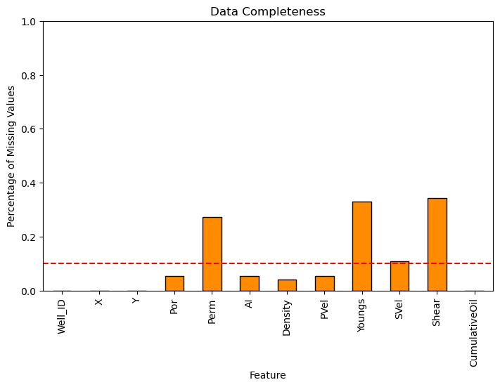
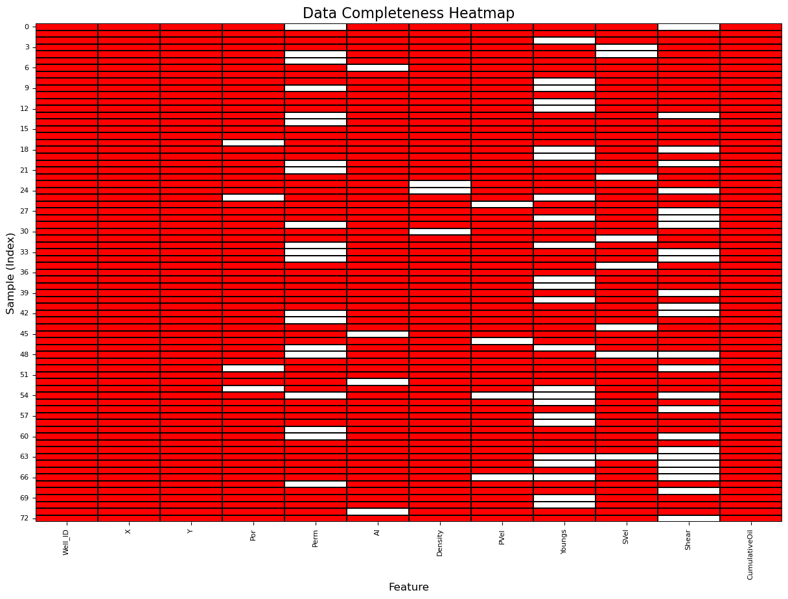
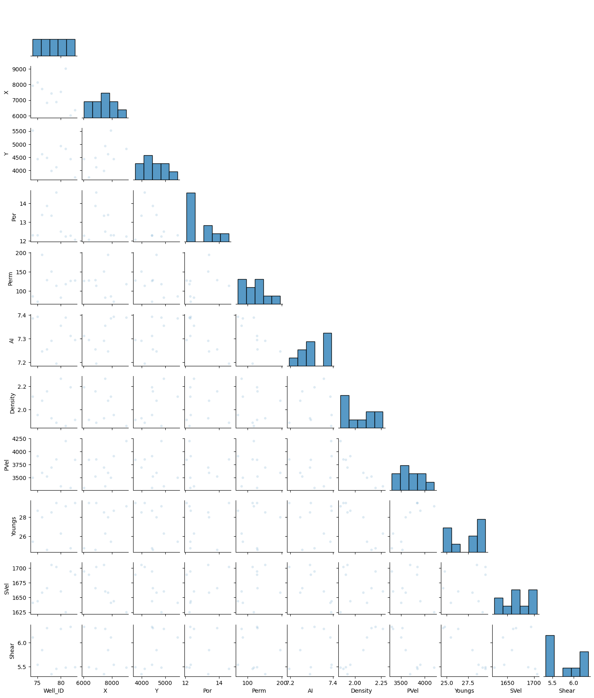
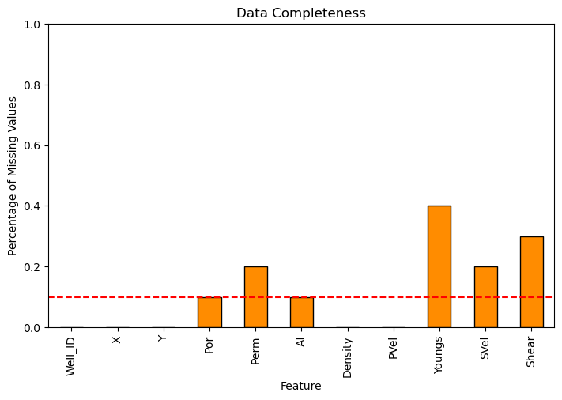
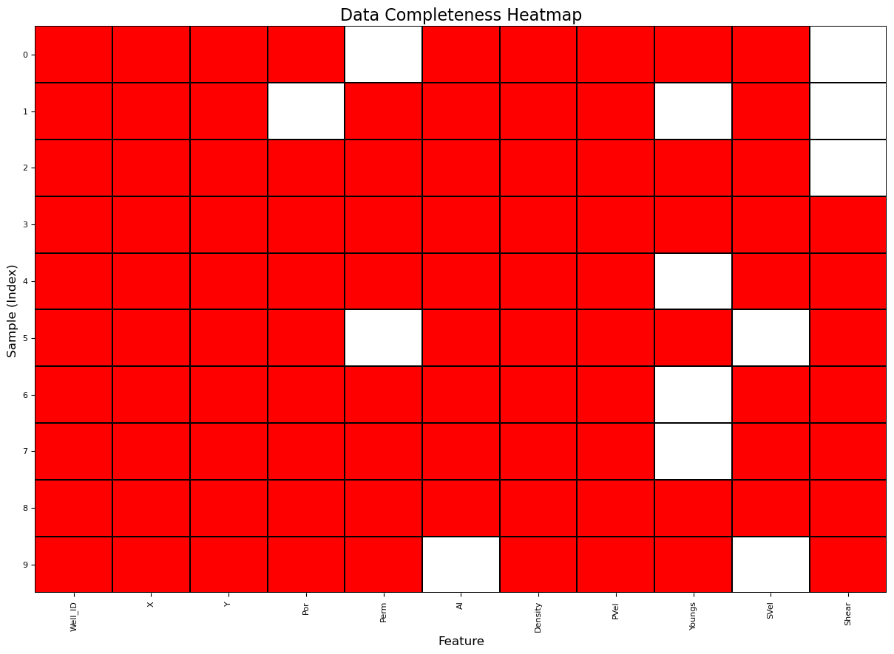

ignore_warnings = True # ignore warnings?
import numpy as np # ndarrays for gridded data
import pandas as pd # DataFrames for tabular data
from sklearn.impute import SimpleImputer # basic imputation method
from sklearn.impute import KNNImputer # k-nearest neighbour imputation method
from sklearn.experimental import enable_iterative_imputer # required for MICE imputation
from sklearn.impute import IterativeImputer # MICE imputation
import os # set working directory, run executables
import math # basic math operations
import random # for random numbers
import matplotlib.pyplot as plt # for plotting
from matplotlib.ticker import (MultipleLocator, AutoMinorLocator) # control of axes ticks
from matplotlib.colors import ListedColormap # custom color maps
import matplotlib.ticker as mtick # control tick label formatting
import seaborn as sns # for matrix scatter plots
from scipy import stats # summary statistics
import numpy.linalg as linalg # for linear algebra
import scipy.spatial as sp # for fast nearest neighbor search
import scipy.signal as signal # kernel for moving window calculation
from numba import jit # for numerical speed up
from statsmodels.stats.weightstats import DescrStatsW
plt.rc('axes', axisbelow=True) # plot all grids below the plot elements
if ignore_warnings == True:
import warnings
warnings.filterwarnings('ignore')
cmap = plt.cm.inferno # color map
seed = 73071 # random seed
np.random.seed(seed=seed)
Training Data#
names = {'X, m':'X','Y, m':'Y','Depth, m':'Depth','Porosity, fraction':'Por','Permeability, mD':'Perm',
'Acoustic Impedance, kg/s-m^2':'AI','Rock facies':'Facies','Density, g/cm3':'Density','Compressible velocity, m/s':'PVel',
'Youngs modulus, GPa':'Youngs','Shear velocity, m/s':'SVel','Shear modulus, GPa':'Shear'}
df = pd.read_csv('https://raw.githubusercontent.com/GeostatsGuy/GeoDataSets/master/res21_wells.csv') # load data from Dr. Pyrcz's GitHub repository
df = df.rename(columns=names)
df['Por'] = df['Por'] * 100.0; df['AI'] = df['AI'] / 1000000.0;
df['Facies'] = df['Facies'].replace({'Sandstone': 4,'Shaly sandstone': 3,'Sandy shale': 2,'Shale': 1}) # replace with ordinal categorical
df.head(n=20)
| Well_ID | X | Y | Depth | Por | Perm | AI | Facies | Density | PVel | Youngs | SVel | Shear | |
|---|---|---|---|---|---|---|---|---|---|---|---|---|---|
| 0 | 1 | 7325 | 7175 | 3052.8 | 13.330 | NaN | 6.981172 | 4.0 | 2.280137 | 3106.544655 | 24.721555 | 1690.417133 | 7.304717 |
| 1 | 1 | 7325 | 7175 | 3053.3 | 13.865 | NaN | 7.234749 | 4.0 | 2.135061 | 4003.697087 | 23.360728 | 1573.847967 | 5.202120 |
| 2 | 1 | 7325 | 7175 | 3053.8 | 14.638 | NaN | 7.157384 | 4.0 | 1.991045 | 3462.569030 | 28.232152 | 1636.279139 | NaN |
| 3 | 1 | 7325 | 7175 | 3054.3 | NaN | NaN | NaN | 4.0 | 1.694242 | 3836.960702 | 29.220132 | 1613.043048 | 5.074763 |
| 4 | 1 | 7325 | 7175 | 3054.8 | 14.993 | NaN | NaN | 4.0 | 1.664371 | 3919.585777 | NaN | 1636.846284 | 5.277834 |
| 5 | 1 | 7325 | 7175 | 3055.3 | 15.250 | NaN | 6.975785 | 4.0 | 2.165119 | 2850.993945 | 22.576821 | 1613.944353 | NaN |
| 6 | 1 | 7325 | 7175 | 3055.8 | 15.501 | NaN | 7.202545 | 4.0 | 1.499129 | 4523.602700 | 34.801239 | 1786.934783 | NaN |
| 7 | 1 | 7325 | 7175 | 3056.3 | 15.843 | NaN | 7.071741 | 4.0 | 2.279221 | 2880.522451 | 22.608217 | 1641.131286 | 7.470394 |
| 8 | 1 | 7325 | 7175 | 3056.8 | 16.004 | NaN | 6.970094 | 4.0 | 2.188753 | 3015.599314 | 23.171841 | 1830.396873 | 5.303366 |
| 9 | 1 | 7325 | 7175 | 3057.3 | 7.066 | NaN | 7.836617 | 2.0 | 3.250634 | 2192.474933 | NaN | 1649.546273 | 8.764372 |
| 10 | 1 | 7325 | 7175 | 3057.8 | 7.276 | NaN | 7.445643 | 2.0 | 3.184170 | 2350.321613 | 18.837606 | 1610.467463 | 7.989805 |
| 11 | 1 | 7325 | 7175 | 3058.3 | 13.700 | NaN | 7.336189 | 3.0 | 1.811731 | 3767.966719 | 30.520179 | 1622.468444 | 6.334974 |
| 12 | 1 | 7325 | 7175 | 3058.8 | 13.024 | NaN | 7.317352 | 3.0 | NaN | 3835.851165 | NaN | NaN | 6.642384 |
| 13 | 1 | 7325 | 7175 | 3059.3 | 13.960 | NaN | 7.057106 | 4.0 | 2.117952 | 2812.481667 | NaN | 1853.856534 | 6.694958 |
| 14 | 1 | 7325 | 7175 | 3059.8 | NaN | NaN | 7.167793 | 4.0 | 2.142144 | 3099.416514 | 28.239109 | 1581.985714 | 4.715880 |
| 15 | 1 | 7325 | 7175 | 3060.3 | 14.681 | 189.116974 | 7.112053 | 4.0 | NaN | NaN | 21.196485 | NaN | 6.321146 |
| 16 | 1 | 7325 | 7175 | 3060.8 | 14.719 | NaN | NaN | 4.0 | 2.392220 | 2832.507852 | 20.495103 | 1514.691163 | 6.783678 |
| 17 | 1 | 7325 | 7175 | 3061.3 | 14.690 | NaN | 7.341492 | 4.0 | 1.590041 | 4905.749054 | NaN | 1582.032837 | 5.499947 |
| 18 | 1 | 7325 | 7175 | 3061.8 | 15.361 | NaN | 6.981515 | 4.0 | 1.607275 | 4214.779801 | 33.345387 | 1795.696558 | 5.056062 |
| 19 | 1 | 7325 | 7175 | 3062.3 | 6.265 | NaN | 7.768757 | 2.0 | 2.560526 | 2853.426882 | 23.796816 | 1589.617834 | 7.648818 |
df_mice = df.copy(deep=True) # make a deep copy of the DataFrame
mice_imputer = IterativeImputer()
df_mice.iloc[:,:] = mice_imputer.fit_transform(df_mice)
df_mice['Imputed'] = (df_mice.isnull().sum(axis=1)) > 0
sns.pairplot(df_mice.iloc[:,:], hue="Imputed", plot_kws={'alpha':0.15,'s':20}, palette = 'gnuplot', corner=True)
plt.subplots_adjust(left=0.0, bottom=0.0, right=0.5, top=0.6, wspace=0.1, hspace=0.2)

df_2D = df_mice.groupby('Well_ID').mean().reset_index()
df_2D.drop(['Facies','Depth','Imputed'],axis=1,inplace=True)
df_2D.head(n=20)
sns.pairplot(df_2D.iloc[:,:], plot_kws={'alpha':0.15,'s':20}, palette = 'gnuplot', corner=True)
plt.subplots_adjust(left=0.0, bottom=0.0, right=0.5, top=0.6, wspace=0.1, hspace=0.2)

df_prod = pd.read_csv('https://raw.githubusercontent.com/GeostatsGuy/GeoDataSets/master/res21_production_history.csv') # load data from Dr. Pyrcz's GitHub repository
df_prod.head(n=20)
| Well_ID | Cumulative oil production (1 yr), MSTB | Cumulative oil production (2 yr), MSTB | Cumulative oil production (3 yr), MSTB | Cumulative Water production (1 yr), MSTB | Cumulative Water production (2 yr), MSTB | Cumulative Water production (3 yr), MSTB | |
|---|---|---|---|---|---|---|---|
| 0 | 1 | 450.98 | 684.20 | 847.33 | 494.89 | 1236.40 | 2108.70 |
| 1 | 2 | 594.43 | 946.61 | 1201.20 | 226.97 | 646.50 | 1187.70 |
| 2 | 3 | 381.75 | 611.38 | 781.40 | 393.17 | 948.18 | 1603.10 |
| 3 | 4 | 795.82 | 1262.80 | 1573.20 | 253.25 | 782.38 | 1502.90 |
| 4 | 5 | 259.90 | 426.42 | 548.68 | 523.66 | 1187.00 | 1932.50 |
| 5 | 6 | 365.12 | 548.91 | 668.02 | 156.75 | 466.30 | 860.95 |
| 6 | 7 | 423.70 | 654.55 | 823.89 | 561.25 | 1340.60 | 2239.70 |
| 7 | 8 | 361.30 | 551.42 | 683.92 | 535.32 | 1285.60 | 2149.00 |
| 8 | 9 | 688.58 | 1063.00 | 1314.40 | 243.26 | 761.42 | 1459.00 |
| 9 | 10 | 229.35 | 388.35 | 518.27 | 222.51 | 528.21 | 880.80 |
| 10 | 11 | 512.80 | 791.55 | 978.14 | 189.40 | 589.27 | 1120.30 |
| 11 | 12 | 422.81 | 659.42 | 840.47 | 380.47 | 987.10 | 1714.10 |
| 12 | 13 | 357.06 | 569.71 | 732.29 | 536.04 | 1243.10 | 2049.90 |
| 13 | 14 | 472.57 | 723.88 | 897.16 | 440.96 | 1148.40 | 2003.30 |
| 14 | 15 | 183.76 | 289.93 | 375.02 | 133.43 | 347.43 | 599.44 |
| 15 | 16 | 275.73 | 460.30 | 608.09 | 708.08 | 1531.50 | 2435.50 |
| 16 | 17 | 596.15 | 882.17 | 1062.10 | 211.70 | 651.45 | 1238.00 |
| 17 | 18 | 300.81 | 470.42 | 597.31 | 318.22 | 807.52 | 1392.30 |
| 18 | 19 | 451.52 | 669.82 | 817.74 | 275.29 | 790.33 | 1439.10 |
| 19 | 20 | 171.98 | 268.98 | 346.96 | 566.18 | 1285.60 | 2073.20 |
df_2D_merge = pd.merge(df_2D, df_prod[['Well_ID', 'Cumulative oil production (3 yr), MSTB']], on='Well_ID', how='left')
df_2D_merge = df_2D_merge.rename(columns={'Cumulative oil production (3 yr), MSTB':'CumulativeOil'})
df_2D_merge.head(n=20)
| Well_ID | X | Y | Por | Perm | AI | Density | PVel | Youngs | SVel | Shear | CumulativeOil | |
|---|---|---|---|---|---|---|---|---|---|---|---|---|
| 0 | 1 | 7325.0 | 7175.0 | 13.565136 | 118.368463 | 7.214667 | 2.153829 | 3384.052074 | 25.879915 | 1658.605053 | 6.201589 | 847.33 |
| 1 | 2 | 4225.0 | 3525.0 | 12.908408 | 125.260054 | 7.308744 | 2.146639 | 3570.235809 | 25.690257 | 1673.771160 | 6.430271 | 1201.20 |
| 2 | 3 | 7725.0 | 8275.0 | 12.111040 | 93.168031 | 7.366365 | 1.919668 | 3887.521687 | 28.461903 | 1675.645113 | 5.675601 | 781.40 |
| 3 | 4 | 4425.0 | 6475.0 | 13.991270 | 131.611736 | 7.286570 | 1.980835 | 3688.590893 | 27.155202 | 1656.500730 | 5.410390 | 1573.20 |
| 4 | 5 | 2125.0 | 1225.0 | 12.983495 | 100.826574 | 7.333698 | 1.930000 | 3777.962982 | 28.171550 | 1706.678971 | 5.265991 | 548.68 |
| 5 | 6 | 2675.0 | 4525.0 | 12.226270 | 108.455020 | 7.383711 | 1.954879 | 3833.259369 | 28.118732 | 1686.523697 | 5.358857 | 668.02 |
| 6 | 7 | 6725.0 | 8025.0 | 13.693211 | 135.218962 | 7.298051 | 2.189948 | 3430.918445 | 25.010073 | 1662.282149 | 6.187108 | 823.89 |
| 7 | 8 | 3975.0 | 8675.0 | 12.675626 | 108.349668 | 7.343753 | 2.190021 | 3575.267813 | 25.453435 | 1670.044150 | 6.102097 | 683.92 |
| 8 | 9 | 5625.0 | 5475.0 | 13.128502 | 105.599680 | 7.287501 | 2.104210 | 3529.603862 | 25.443744 | 1701.602473 | 6.267604 | 1314.40 |
| 9 | 10 | 3725.0 | 1575.0 | 11.321564 | 65.382441 | 7.492495 | 1.841852 | 4051.955124 | 31.093024 | 1658.384308 | 5.580472 | 518.27 |
| 10 | 11 | 4275.0 | 5675.0 | 13.000637 | 120.898419 | 7.281763 | 2.133061 | 3529.028676 | 26.010138 | 1681.960101 | 6.203381 | 978.14 |
| 11 | 12 | 1625.0 | 3775.0 | 12.590696 | 98.251864 | 7.321879 | 1.917432 | 3849.179907 | 29.226460 | 1650.132525 | 5.268109 | 840.47 |
| 12 | 13 | 5175.0 | 8875.0 | 13.117022 | 114.602144 | 7.319649 | 2.130709 | 3676.880428 | 26.147010 | 1673.114477 | 6.011757 | 732.29 |
| 13 | 14 | 3075.0 | 8225.0 | 13.036531 | 120.142317 | 7.316224 | 1.918304 | 3833.649001 | 28.918379 | 1694.594666 | 5.254966 | 897.16 |
| 14 | 15 | 1925.0 | 5875.0 | 11.292591 | 96.050187 | 7.448518 | 1.794275 | 4331.681675 | 31.283109 | 1640.090704 | 5.177548 | 375.02 |
| 15 | 16 | 4775.0 | 9475.0 | 12.430052 | 114.389578 | 7.350983 | 2.203002 | 3423.908810 | 25.977297 | 1675.355134 | 6.289694 | 608.09 |
| 16 | 17 | 5725.0 | 6275.0 | 13.508099 | 138.894010 | 7.298426 | 2.210916 | 3481.063941 | 24.828864 | 1656.891346 | 6.223076 | 1062.10 |
| 17 | 18 | 2625.0 | 2375.0 | 11.259551 | 79.129051 | 7.439546 | 1.846770 | 4154.998537 | 31.005382 | 1658.461447 | 4.939140 | 597.31 |
| 18 | 19 | 3475.0 | 6925.0 | 13.058995 | 131.180643 | 7.324506 | 1.914314 | 3897.549526 | 28.860918 | 1684.511103 | 5.336072 | 817.74 |
| 19 | 20 | 1175.0 | 2175.0 | 11.768693 | 87.146985 | 7.369706 | 1.947713 | 3905.182183 | 29.542474 | 1695.333285 | 5.445689 | 346.96 |
proportion_NaN = 0.10 # proportion of values in DataFrame to remove
np.random.seed(seed=seed) # ensure repeatability
remove = np.random.random(df_2D_merge.shape) < proportion_NaN # make the boolean array for removal
remove[:,[0,1,2,11]] = False
df_2D_merge_missing = df_2D_merge.mask(remove)
df_2D_merge_missing.head(n=20)
proportion_NaN = 0.30 # proportion of values in DataFrame to remove
np.random.seed(seed=seed) # ensure repeatability
remove = np.random.random(df_2D_merge.shape) < proportion_NaN # make the boolean array for removal
remove[:,[0,1,2,3,5,6,7,9,11]] = False
df_2D_merge_missing2 = df_2D_merge_missing.mask(remove)
df_2D_merge_missing2.head(n=20)
| Well_ID | X | Y | Por | Perm | AI | Density | PVel | Youngs | SVel | Shear | CumulativeOil | |
|---|---|---|---|---|---|---|---|---|---|---|---|---|
| 0 | 1 | 7325.0 | 7175.0 | 13.565136 | NaN | 7.214667 | 2.153829 | 3384.052074 | 25.879915 | 1658.605053 | NaN | 847.33 |
| 1 | 2 | 4225.0 | 3525.0 | 12.908408 | 125.260054 | 7.308744 | 2.146639 | 3570.235809 | 25.690257 | 1673.771160 | 6.430271 | 1201.20 |
| 2 | 3 | 7725.0 | 8275.0 | 12.111040 | 93.168031 | 7.366365 | 1.919668 | 3887.521687 | NaN | 1675.645113 | 5.675601 | 781.40 |
| 3 | 4 | 4425.0 | 6475.0 | 13.991270 | 131.611736 | 7.286570 | 1.980835 | 3688.590893 | 27.155202 | NaN | 5.410390 | 1573.20 |
| 4 | 5 | 2125.0 | 1225.0 | 12.983495 | NaN | 7.333698 | 1.930000 | 3777.962982 | 28.171550 | NaN | 5.265991 | 548.68 |
| 5 | 6 | 2675.0 | 4525.0 | 12.226270 | NaN | 7.383711 | 1.954879 | 3833.259369 | 28.118732 | 1686.523697 | 5.358857 | 668.02 |
| 6 | 7 | 6725.0 | 8025.0 | 13.693211 | 135.218962 | NaN | 2.189948 | 3430.918445 | 25.010073 | 1662.282149 | 6.187108 | 823.89 |
| 7 | 8 | 3975.0 | 8675.0 | 12.675626 | 108.349668 | 7.343753 | 2.190021 | 3575.267813 | 25.453435 | 1670.044150 | 6.102097 | 683.92 |
| 8 | 9 | 5625.0 | 5475.0 | 13.128502 | 105.599680 | 7.287501 | 2.104210 | 3529.603862 | NaN | 1701.602473 | 6.267604 | 1314.40 |
| 9 | 10 | 3725.0 | 1575.0 | 11.321564 | NaN | 7.492495 | 1.841852 | 4051.955124 | NaN | 1658.384308 | 5.580472 | 518.27 |
| 10 | 11 | 4275.0 | 5675.0 | 13.000637 | 120.898419 | 7.281763 | 2.133061 | 3529.028676 | 26.010138 | 1681.960101 | 6.203381 | 978.14 |
| 11 | 12 | 1625.0 | 3775.0 | 12.590696 | 98.251864 | 7.321879 | 1.917432 | 3849.179907 | NaN | 1650.132525 | 5.268109 | 840.47 |
| 12 | 13 | 5175.0 | 8875.0 | 13.117022 | 114.602144 | 7.319649 | 2.130709 | 3676.880428 | NaN | 1673.114477 | 6.011757 | 732.29 |
| 13 | 14 | 3075.0 | 8225.0 | 13.036531 | NaN | 7.316224 | 1.918304 | 3833.649001 | 28.918379 | 1694.594666 | NaN | 897.16 |
| 14 | 15 | 1925.0 | 5875.0 | 11.292591 | NaN | 7.448518 | 1.794275 | 4331.681675 | 31.283109 | 1640.090704 | 5.177548 | 375.02 |
| 15 | 16 | 4775.0 | 9475.0 | 12.430052 | 114.389578 | 7.350983 | 2.203002 | 3423.908810 | 25.977297 | 1675.355134 | 6.289694 | 608.09 |
| 16 | 17 | 5725.0 | 6275.0 | 13.508099 | 138.894010 | 7.298426 | 2.210916 | 3481.063941 | 24.828864 | 1656.891346 | 6.223076 | 1062.10 |
| 17 | 18 | 2625.0 | 2375.0 | NaN | 79.129051 | 7.439546 | 1.846770 | 4154.998537 | 31.005382 | 1658.461447 | 4.939140 | 597.31 |
| 18 | 19 | 3475.0 | 6925.0 | 13.058995 | 131.180643 | 7.324506 | 1.914314 | 3897.549526 | NaN | 1684.511103 | NaN | 817.74 |
| 19 | 20 | 1175.0 | 2175.0 | 11.768693 | 87.146985 | 7.369706 | 1.947713 | 3905.182183 | NaN | 1695.333285 | 5.445689 | 346.96 |
plt.subplot(111) # data completeness plot
(df_2D_merge_missing2.isnull().sum()/len(df_2D_merge_missing2)).plot(kind = 'bar',color='darkorange',edgecolor='black')
plt.xlabel('Feature'); plt.ylabel('Percentage of Missing Values'); plt.title('Data Completeness'); plt.ylim([0.0,1.0])
plt.plot([-0.5,df.shape[1]+0.5],[0.1,0.1],color='red',ls='--')
plt.subplots_adjust(left=0.0, bottom=0.0, right=1.0, top=0.8, wspace=0.2, hspace=0.2); plt.show()

df_2D_merge_missing2_copy = df_2D_merge_missing2.copy(deep=True) # make a deep copy of the DataFrame
df_bool = df_2D_merge_missing2_copy.isnull() # true is value, false if NaN
#df_bool = df_bool.set_index(df_temp.pop('UWI')) # set the index / feature for the heat map y column
heat = sns.heatmap(df_bool, cmap=['r','w'], annot=False, fmt='.0f',cbar=False,linecolor='black',linewidth=0.1) # make the binary heat map, no bins
heat.set_xticklabels(heat.get_xticklabels(), rotation=90, fontsize=8)
heat.set_yticklabels(heat.get_yticklabels(), rotation=0, fontsize=8)
heat.set_title('Data Completeness Heatmap',fontsize=16); heat.set_xlabel('Feature',fontsize=12); heat.set_ylabel('Sample (Index)',fontsize=12)
plt.subplots_adjust(left=0.0, bottom=0.0, right=1.8, top=1.6, wspace=0.2, hspace=0.2); plt.show()

df_2D_merge_missing2.to_csv(r'C:\Local\res21_2D_well.csv', index=False)
Testing Data#
names = {'X, m':'X','Y, m':'Y','Depth, m':'Depth','Porosity, fraction':'Por','Permeability, mD':'Perm',
'Acoustic Impedance, kg/s-m^2':'AI','Rock facies':'Facies','Density, g/cm3':'Density','Compressible velocity, m/s':'PVel',
'Youngs modulus, GPa':'Youngs','Shear velocity, m/s':'SVel','Shear modulus, GPa':'Shear'}
df_test = pd.read_csv('https://raw.githubusercontent.com/GeostatsGuy/GeoDataSets/master/res21_new_wells.csv') # load data from Dr. Pyrcz's GitHub repository
df_test = df_test.rename(columns=names)
df_test['Por'] = df_test['Por'] * 100.0; df_test['AI'] = df_test['AI'] / 1000000.0;
df_test['Facies'] = df_test['Facies'].replace({'Sandstone': 4,'Shaly sandstone': 3,'Sandy shale': 2,'Shale': 1}) # replace with ordinal categorical
df_test.head(n=20)
| Well_ID | X | Y | Depth | Por | Perm | AI | Facies | Density | PVel | Youngs | SVel | Shear | |
|---|---|---|---|---|---|---|---|---|---|---|---|---|---|
| 0 | 74 | 7925 | 5525 | 3050.51 | NaN | NaN | 7.842692 | 2.0 | NaN | 3387.576377 | NaN | 1646.603549 | 6.229941 |
| 1 | 74 | 7925 | 5525 | 3051.01 | 9.096 | NaN | 7.807355 | 3.0 | 1.872982 | NaN | NaN | 1465.051728 | 4.930174 |
| 2 | 74 | 7925 | 5525 | 3051.51 | 5.878 | NaN | 7.864859 | 2.0 | 3.187123 | 2660.306664 | 18.875428 | 1570.481116 | 7.202703 |
| 3 | 74 | 7925 | 5525 | 3052.01 | NaN | NaN | 7.309509 | 3.0 | 2.058578 | 3285.615950 | 26.992396 | 1652.096739 | 6.486131 |
| 4 | 74 | 7925 | 5525 | 3052.51 | 12.285 | NaN | 7.328553 | 3.0 | 1.678339 | 4432.429019 | 35.261378 | 1697.320552 | 3.802001 |
| 5 | 74 | 7925 | 5525 | 3053.01 | 12.562 | NaN | 7.660011 | 3.0 | NaN | NaN | 31.391283 | NaN | NaN |
| 6 | 74 | 7925 | 5525 | 3053.51 | 12.519 | NaN | 7.169346 | 3.0 | 1.977816 | 3840.180887 | 25.716447 | 1666.313834 | NaN |
| 7 | 74 | 7925 | 5525 | 3054.01 | 12.729 | NaN | NaN | 4.0 | NaN | 3983.286988 | NaN | 1830.249242 | 5.898287 |
| 8 | 74 | 7925 | 5525 | 3054.51 | 13.436 | 59.748051 | 7.027584 | 4.0 | 1.727151 | 3667.821993 | 32.492075 | 1691.460941 | 5.074222 |
| 9 | 74 | 7925 | 5525 | 3055.01 | 6.006 | NaN | 7.885494 | 2.0 | NaN | 3148.967557 | 23.207207 | 1454.617888 | 8.359293 |
| 10 | 74 | 7925 | 5525 | 3055.51 | 6.680 | NaN | NaN | 2.0 | 3.161654 | NaN | 19.746807 | 1647.724272 | 8.767678 |
| 11 | 74 | 7925 | 5525 | 3056.01 | 13.114 | NaN | 7.349444 | 3.0 | 2.307988 | 2967.511131 | 22.815707 | NaN | 5.720945 |
| 12 | 74 | 7925 | 5525 | 3056.51 | 13.479 | NaN | 7.501889 | 3.0 | NaN | 3904.472439 | 25.894549 | 1619.899476 | NaN |
| 13 | 74 | 7925 | 5525 | 3057.01 | 13.918 | NaN | 7.231373 | 3.0 | 1.656033 | 4354.403747 | NaN | 1708.941721 | 4.844841 |
| 14 | 74 | 7925 | 5525 | 3057.51 | 14.341 | NaN | 7.560771 | 3.0 | 1.742168 | 4295.840829 | NaN | 1729.386647 | 7.338469 |
| 15 | 74 | 7925 | 5525 | 3058.01 | 14.254 | NaN | 6.964145 | 4.0 | 1.954440 | 3373.862798 | NaN | 1778.974933 | 5.928776 |
| 16 | 74 | 7925 | 5525 | 3058.51 | 14.572 | NaN | NaN | 4.0 | 2.246943 | 2996.679191 | 25.802453 | 1507.461838 | 5.317093 |
| 17 | 74 | 7925 | 5525 | 3059.01 | 14.980 | NaN | 7.295773 | 4.0 | 2.221400 | 3143.999934 | 22.607028 | 1658.725153 | 6.428260 |
| 18 | 74 | 7925 | 5525 | 3059.51 | 15.331 | 112.649997 | 6.829931 | 4.0 | 2.389682 | 2515.431107 | 19.903488 | 1588.000674 | 7.138975 |
| 19 | 74 | 7925 | 5525 | 3060.01 | 16.176 | NaN | 6.945503 | 4.0 | 1.525834 | NaN | NaN | 1632.129624 | 4.475699 |
df_test_2D = df_test.groupby('Well_ID').mean().reset_index()
df_test_2D.drop(['Facies','Depth'],axis=1,inplace=True)
df_test_2D.head(n=20)
sns.pairplot(df_test_2D.iloc[:,:], plot_kws={'alpha':0.15,'s':20}, palette = 'gnuplot', corner=True)
plt.subplots_adjust(left=0.0, bottom=0.0, right=0.5, top=0.6, wspace=0.1, hspace=0.2)

df_test_2D.describe()
| Well_ID | X | Y | Por | Perm | AI | Density | PVel | Youngs | SVel | Shear | |
|---|---|---|---|---|---|---|---|---|---|---|---|
| count | 10.00000 | 10.000000 | 10.000000 | 10.000000 | 10.000000 | 10.000000 | 10.000000 | 10.000000 | 10.000000 | 10.000000 | 10.000000 |
| mean | 78.50000 | 7385.000000 | 4505.000000 | 12.888227 | 120.208381 | 7.312129 | 2.035705 | 3675.673224 | 27.451897 | 1668.733330 | 5.820889 |
| std | 3.02765 | 888.756935 | 514.349643 | 0.858320 | 36.120335 | 0.068620 | 0.144272 | 281.302598 | 1.988986 | 27.708879 | 0.405087 |
| min | 74.00000 | 6025.000000 | 3725.000000 | 12.073750 | 71.992542 | 7.194660 | 1.862495 | 3304.759974 | 24.569174 | 1625.705857 | 5.345275 |
| 25% | 76.25000 | 6837.500000 | 4200.000000 | 12.283560 | 93.112284 | 7.263776 | 1.915984 | 3504.615098 | 25.656353 | 1647.674806 | 5.480845 |
| 50% | 78.50000 | 7475.000000 | 4450.000000 | 12.398912 | 122.190084 | 7.304023 | 2.016851 | 3643.822155 | 28.263023 | 1663.385145 | 5.693875 |
| 75% | 80.75000 | 7875.000000 | 4775.000000 | 13.380542 | 128.690742 | 7.378976 | 2.146680 | 3846.534914 | 29.061416 | 1692.971554 | 6.248317 |
| max | 83.00000 | 9025.000000 | 5525.000000 | 14.588533 | 195.267385 | 7.393464 | 2.266880 | 4206.389963 | 29.529052 | 1705.296805 | 6.333516 |
proportion_NaN = 0.10 # proportion of values in DataFrame to remove
np.random.seed(seed=seed) # ensure repeatability
remove = np.random.random(df_test_2D.shape) < proportion_NaN # make the boolean array for removal
remove[:,[0,1,2]] = False
df_test_2D_missing = df_test_2D.mask(remove)
df_test_2D_missing.head(n=20)
proportion_NaN = 0.30 # proportion of values in DataFrame to remove
np.random.seed(seed=seed) # ensure repeatability
remove = np.random.random(df_test_2D.shape) < proportion_NaN # make the boolean array for removal
remove[:,[0,1,2,3,5,6,7,9]] = False
df_test_2D_missing2 = df_test_2D_missing.mask(remove)
df_test_2D_missing2.head(n=20)
| Well_ID | X | Y | Por | Perm | AI | Density | PVel | Youngs | SVel | Shear | |
|---|---|---|---|---|---|---|---|---|---|---|---|
| 0 | 74 | 7925.0 | 5525.0 | 12.297556 | NaN | 7.386720 | 2.113875 | 3497.399163 | 25.438942 | 1641.413329 | NaN |
| 1 | 75 | 8125.0 | 4425.0 | NaN | 71.992542 | 7.393464 | 1.954353 | 3911.754285 | NaN | 1644.080134 | NaN |
| 2 | 76 | 7725.0 | 4625.0 | 13.390333 | 195.267385 | 7.246248 | 2.079348 | 3592.473231 | 28.003328 | 1658.458824 | NaN |
| 3 | 77 | 6825.0 | 4475.0 | 13.870105 | 128.974715 | 7.254626 | 2.157615 | 3526.262903 | 24.569174 | 1666.223529 | 6.311062 |
| 4 | 78 | 7425.0 | 3975.0 | 13.351167 | 151.252341 | 7.291226 | 1.927381 | 3695.171078 | NaN | 1705.296805 | 5.345275 |
| 5 | 79 | 6875.0 | 4125.0 | 14.588533 | NaN | 7.194660 | 1.887621 | 3847.731545 | 29.519405 | NaN | 5.454473 |
| 6 | 80 | 7525.0 | 4925.0 | 12.495294 | 82.326745 | 7.355745 | 2.266880 | 3331.845076 | NaN | 1660.546761 | 6.292982 |
| 7 | 81 | 9025.0 | 4825.0 | 12.234105 | 117.458572 | 7.390554 | 1.862495 | 4206.389963 | NaN | 1625.705857 | 5.476935 |
| 8 | 82 | 6025.0 | 4425.0 | 12.278895 | 126.921596 | 7.312159 | 2.195301 | 3304.759974 | 24.742882 | 1694.248092 | 6.333516 |
| 9 | 83 | 6375.0 | 3725.0 | 12.073750 | 127.838824 | NaN | 1.912184 | 3842.945020 | 29.529052 | NaN | 5.492577 |
plt.subplot(111) # data completeness plot
(df_test_2D_missing2.isnull().sum()/len(df_test_2D_missing2)).plot(kind = 'bar',color='darkorange',edgecolor='black')
plt.xlabel('Feature'); plt.ylabel('Percentage of Missing Values'); plt.title('Data Completeness'); plt.ylim([0.0,1.0])
plt.plot([-0.5,df.shape[1]+0.5],[0.1,0.1],color='red',ls='--')
plt.subplots_adjust(left=0.0, bottom=0.0, right=1.0, top=0.8, wspace=0.2, hspace=0.2); plt.show()

df_test_2D_missing2_copy = df_test_2D_missing2.copy(deep=True) # make a deep copy of the DataFrame
df_bool = df_test_2D_missing2_copy.isnull() # true is value, false if NaN
#df_bool = df_bool.set_index(df_temp.pop('UWI')) # set the index / feature for the heat map y column
heat = sns.heatmap(df_bool, cmap=['r','w'], annot=False, fmt='.0f',cbar=False,linecolor='black',linewidth=0.1) # make the binary heat map, no bins
heat.set_xticklabels(heat.get_xticklabels(), rotation=90, fontsize=8)
heat.set_yticklabels(heat.get_yticklabels(), rotation=0, fontsize=8)
heat.set_title('Data Completeness Heatmap',fontsize=16); heat.set_xlabel('Feature',fontsize=12); heat.set_ylabel('Sample (Index)',fontsize=12)
plt.subplots_adjust(left=0.0, bottom=0.0, right=1.8, top=1.6, wspace=0.2, hspace=0.2); plt.show()

df_test_2D_missing2.to_csv(r'C:\Local\res21_2D_wells_test.csv', index=False)